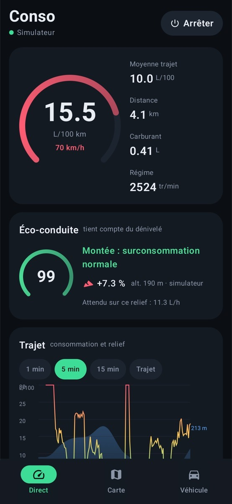
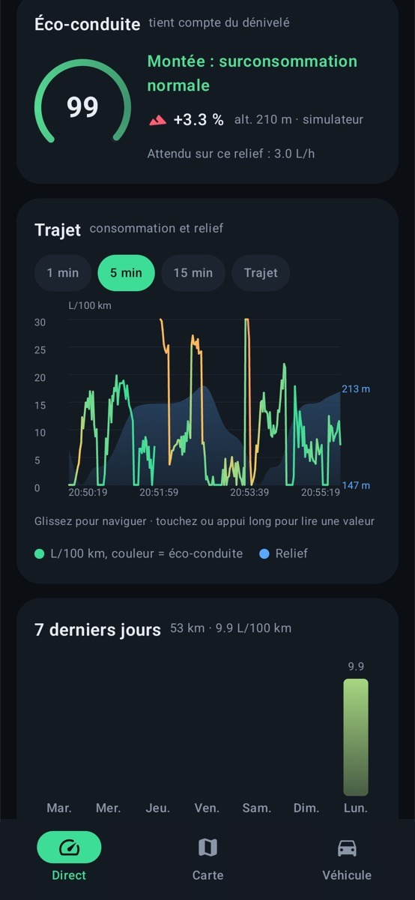
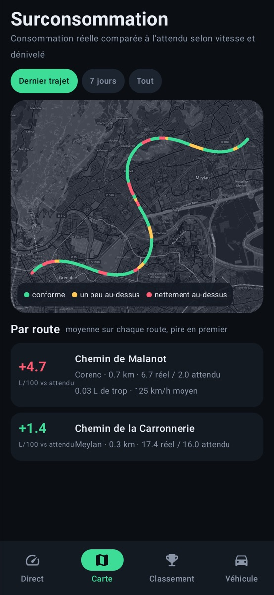
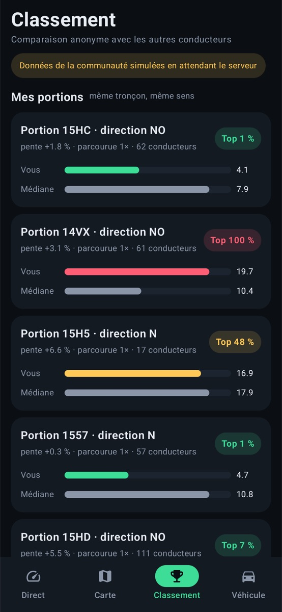
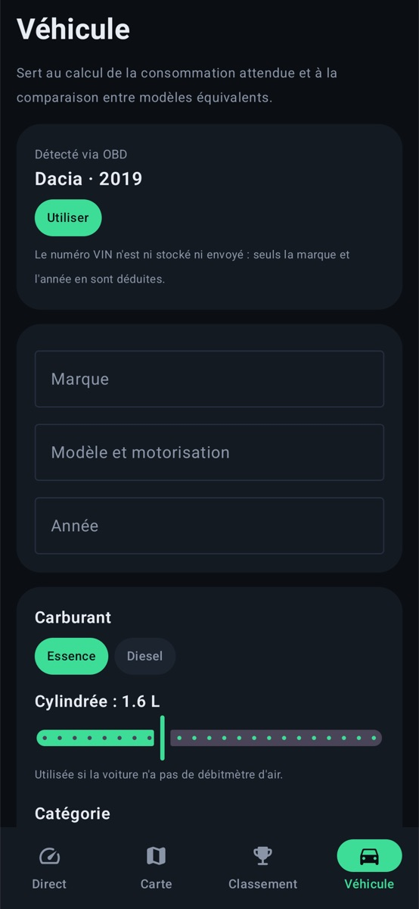

Read-only: the app reads your car's data and changes nothing in it
EcoDrive OBD shows your car's real fuel consumption live, read through a small Bluetooth OBD-II adapter (ELM327, sold separately). It also scores your driving against what the road actually demands: climbing a hill doesn't cost you points.





Your car's trip computer gives one average. EcoDrive OBD shows you where you burn fuel, and why.
Instant L/100 km (L/h at standstill) from the fuel-rate PID, the mass air flow sensor or manifold pressure, whichever your car exposes.
Climbing a 6 % hill isn't bad driving. Pressing the throttle on the way down is. The score knows the difference.
Every road you drive, coloured by how much more you burned than expected, and averaged per road to surface your real black spots.
Make and model year are read from the VIN your car reports. Nothing to type in to get started.
No adapter yet? The app's ELM327 simulator answers with real OBD frames, so you can try everything from your couch.
Compare yourself with other drivers on the same road section, in the same direction, with comparable cars. Not live yet: today the screen shows demo data until the shared backend ships.
A physics model predicts what a careful driver would burn on this exact stretch of road. Your score is how close you get. It's an estimate: the model uses a generic car template, not a calibration of yours.
Read the carSpeed, RPM and fuel flow over OBD-II, several times per second.
Read the roadElevation from the phone's barometer, or from a 90 m terrain model when the phone has none. Slope is computed over the last 100 m.
PredictRolling resistance, air drag and gravity give the power needed, then the fuel a reasonable engine would use.
CompareOver-consumption, harsh acceleration, high RPM and throttle on downhills lower the score. Climbing does not.
Better said up front.
Native Android, no account. Trips are stored on your phone. Coordinates go to third-party services for elevation, street names and the map background: the details are in the privacy policy.
Plug a Bluetooth ELM327 adapter into the OBD-II port, pair it with your phone, then build the app from source. No adapter yet? The built-in simulator speaks real OBD frames.
Get the source on GitHub